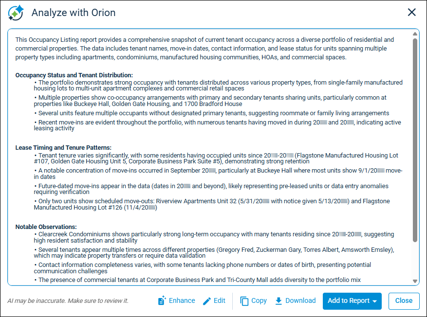
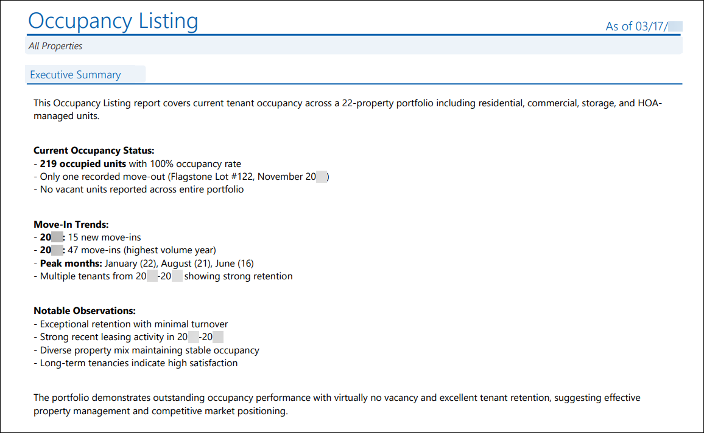

Source: https://rmxhelp.rentmanager.com/Topics/Express/KB/Orion-Report-Analysis.htm
Report Analysis Powered by Orion AI
The Orion Report Analysis—powered by Orion AI—is a feature that helps you analyze the data in your Rent Manager reports by summarizing their results in clear overviews that highlight key information. You can review and refine the analysis, and also copy, download, or attach the analysis directly to the report when you export it to save time, improve clarity, and make your reports easier to understand.
With the Orion Report Analysis, you can opt to make the generated analysis more detailed or more concise to fit your needs for each report. This allows you to generate helpful insights as well as track trends.
More Information
This feature is licensed and must be purchased separately. For more information, contact your sales representative at sales@rentmanager.com.
The Audit Trail Analysis—powered by Orion AI—is a separate AI-generated report analysis feature specifically for the Audit Trail report. For more information, refer to Audit Trail Analysis Powered by Orion AI.
Generate Report Analysis
You can access the Orion Report Analysis from the generated results of a report by clicking  Analyze with Orion in the bottom-right of the page. This pop-up allows you to review a summarized analysis of the report's results, and enhance, edit, copy, and download it as needed. You can also opt to add an additional page to the report that displays the AI analysis.
Analyze with Orion in the bottom-right of the page. This pop-up allows you to review a summarized analysis of the report's results, and enhance, edit, copy, and download it as needed. You can also opt to add an additional page to the report that displays the AI analysis.
More Information
Currently, only some reports have Orion Report Analysis enabled. More reports will have this functionality over time.

The following actions are available:
| Options | Description | |||
|---|---|---|---|---|
|
Enhance |
Prompts Orion AI to reevaluate the report data and generate new AI analysis based on your needs. Select one of the following options: |
|||
|
||||
|
Edit |
Opens a pop-up text editor that allows you to manually edit the text directly. AI-generated data is not always completely accurate and cannot account for external factors (such as your specific business processes), so you can type to add content to or delete content from the AI analysis as needed. |
|||
|
Copy |
Copies the AI analysis text to your clipboard to be pasted into a document or another screen. |
|||
|
Download |
Saves a PDF file copy of the AI analysis to your local device's downloads folder. |
|||
|
Add to Report |
Adds a new page to the report that contains your finished AI analysis text. You can opt to attach this analysis page as the First Page in the report or the Last Page. |
Report Analysis Page
You can add a page to your report results that displays your AI analysis as a subreport named Executive Summary. This page can be set as either the first page in the report or the last page.

After adding this page to the report, you can export and share the report's generated results—including the AI analysis page—just as you would any other report, such as publishing it to Owner Web Access (OWA) or exporting it as an Excel or PDF file. For more information, refer to Share Reports.
More Information
If the page is refreshed, closed, or the report is rerun, the AI analysis attached to the report is removed. This action cannot be undone, but you can use the Orion Report Analysis to generate a new AI analysis after refreshing or rerunning the report.